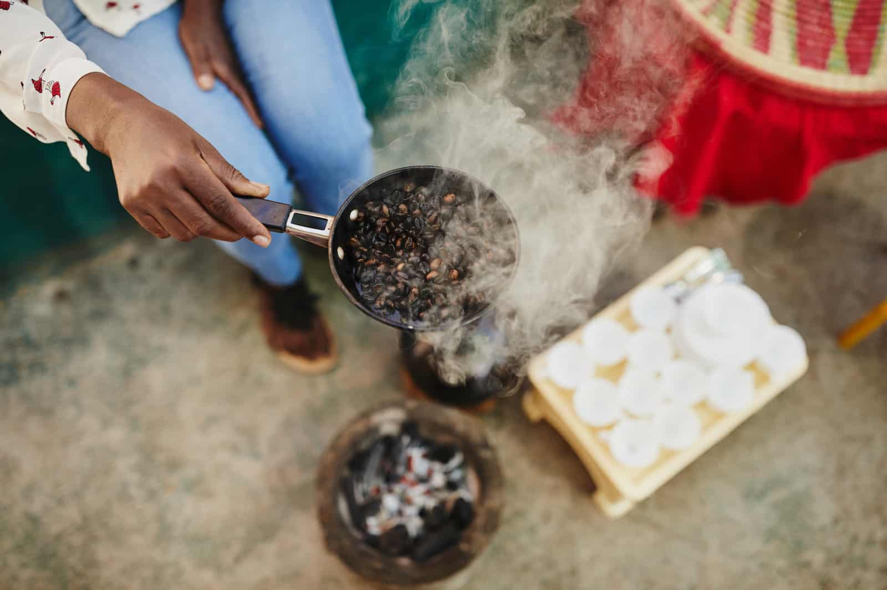
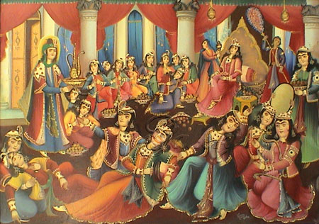
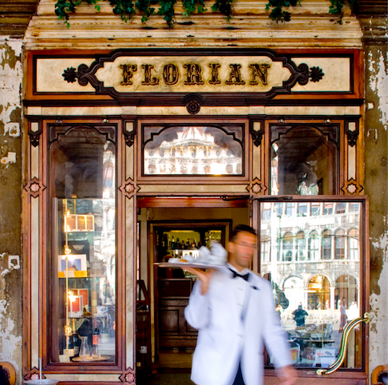
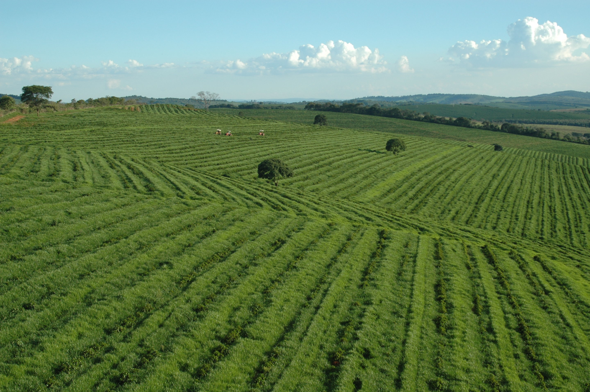

The legend of coffee's discovery dates back to 9th-century Ethiopia, where a goat herder named Kaldi noticed that his goats became more energetic after eating the berries from a certain tree. Curious, Kaldi tried the berries himself and experienced a similar burst of energy.
Coffee cultivation and consumption spread to the Arab world in the 15th century. Coffee was initially known as "qahwa" in Arabic, and it became an integral part of the culture. Coffeehouses, called "qahveh khaneh," began to emerge in cities like Constantinople (modern-day Istanbul), where people gathered to enjoy coffee and engage in intellectual discussions.
Coffee made its way to Europe in the 17th century, with the first coffeehouse opening in Venice in 1645. Coffeehouses quickly became popular gathering places for socializing, discussing politics, and conducting business. They were sometimes referred to as "penny universities" because of the wealth of knowledge one could acquire through conversations in these establishments.
Coffee was introduced to the Americas in the 17th century. The Dutch planted coffee on the island of Java (Indonesia) in the 1600s, and from there, it spread to the Caribbean, Central America, and South America. Brazil would later become one of the world's largest coffee producers.
Coffee cultivation expanded rapidly in countries like Brazil, Colombia, and Vietnam during the 18th and 19th centuries. Large coffee plantations became a significant part of the global coffee industry, leading to the establishment of coffee trade networks and the emergence of coffee as a major commodity.
In the 19th century, there were important innovations in coffee preparation. Instant coffee was invented in 1901 by Satori Kato, and espresso machines were developed in Italy, leading to the popularization of espresso-based drinks like cappuccinos and lattes.
Coffee continued to evolve throughout the 20th and 21st centuries. The growth of coffee shop chains like Starbucks revolutionized the way people consume coffee, emphasizing specialty coffee drinks and creating a global coffee culture. Fair trade and sustainability have also become important concerns within the coffee industry.
A type of pot used for the brewing of coffee by continually cycling the boiling or nearly boiling brew through the grounds using gravity until the required strength is reached.
A French press, also known as a press pot or plunger pot, is a classic and simple method of brewing coffee. It consists of a cylindrical glass or stainless steel container with a plunger and a metal or nylon mesh filter. To make French press coffee, coarse coffee grounds are steeped in hot water for a few minutes. After steeping, the plunger is pressed down, which separates the grounds from the liquid coffee, resulting in a full-bodied, rich brew with a fuller flavor profile due to the extended contact time between water and coffee grounds. French press coffee is appreciated for its bold and aromatic characteristics, making it a popular choice among coffee enthusiasts.
Drip coffee is made by pouring hot water onto ground coffee beans, allowing it to brew. There are several methods for doing this, including using a filter. Terms used for the resulting coffee often reflect the method used, such as drip-brewed coffee, filtered coffee, or immersion-brewed coffee.
traditionally made by cowboys on the trail, typically traveling with the “chuck wagons” that were driving cattle west. It is often thought to be stronger than regular brewed coffee, but that's actually untrue. Real cowboy coffee, when made correctly, is relatively smooth and non-acidic. It is still typically served black, with no cream or sugar added.